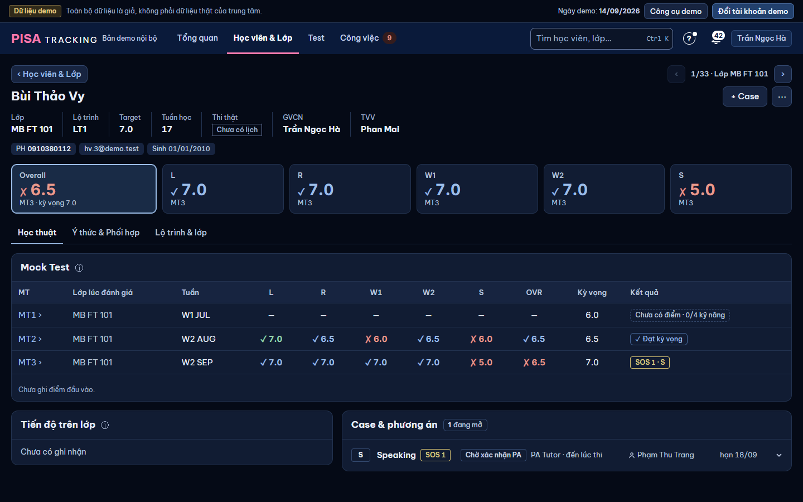
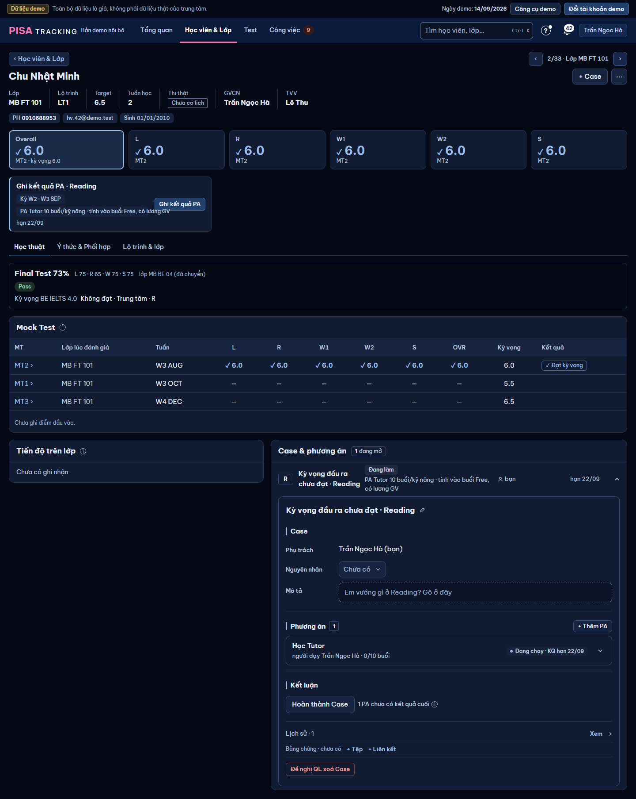
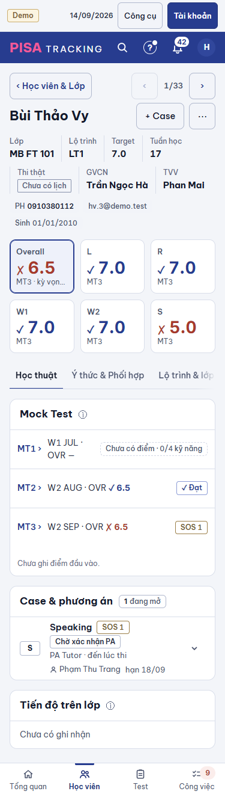

Nguồn: audit 08/11 (docs/superpowers/specs/2026-11-08-audit-ui/bao-cao.md dòng HS1, HS2) → [XM] #1240–#1242 → chủ SP 10/11 "VẪN LÀM". Giữ bố cục U02 đã duyệt, chỉ sửa hai chỗ:
HS1 thẻ nào cũng ghi "MT3" dưới số (375 cắt "MT3 · kỳ vọn…") → ghi nguồn một lần trên dải; thẻ chỉ ghi khi khác thường.
HS2 Tiến độ trên lớp rỗng chiếm nửa hàng bên cạnh khối Case dài → thẻ gọn trong cột trái (hai hàng, không ngăn đầu thẻ), Case vẫn cột phải — chủ SP 10/11: "tiến độ trên lớp ở phía bên trái và case bên phải".
Mọi thao tác giữ (bảng D). Không thêm câu đọc máy chủ (bảng E). Demo Monbay, hôm nay 14/09/2026 · W3 SEP, em Bùi Thảo Vy (MB FT 101 · LT1 · Target 7.0). 1440 tối · 375 sáng. Trái = ảnh chụp web hiện tại (main d8dec605f), phải = sau khi sửa. Viền đứt vàng = chỗ sửa (không lên web).
HS1dòng "Mock Test gần nhất · MT3 · W2 SEP" một lần trên dải · Overall giữ "kỳ vọng 7.0" · 5 thẻ kỹ năng không còn dòng "MT3" · số, ✓ ✗, màu, cỡ, thứ tự thẻ, bấm đổi kỹ năng: giữ. Tiến độ có ghi nhận → hai cột 5 : 7 như U02.

HS2trước: thẻ "Tiến độ trên lớp · Chưa có ghi nhận" chiếm 5/12 hàng, bên phải Case mở dài → khoảng trống lớn dưới thẻ. Sau (chủ SP 10/11): Tiến độ vẫn cột trái, Case cột phải; thẻ rỗng gọn hai hàng "Tiến độ trên lớp · Speaking ⓘ" / "Chưa có ghi nhận · + Ghi tiến độ", không ngăn đầu thẻ.

HS1hết cắt "MT3 · kỳ vọn…": dòng nguồn trên dải, Overall chỉ "kỳ vọng 7.0" · HS2Case trước (giữ luật U02 #16), Tiến độ rỗng thẻ gọn sau Case — nút "+ Ghi tiến độ" 44 px.

C1bấm "+ Ghi tiến độ" ở dòng rỗng → thẻ mở form cũ ngay trong cột trái (không panel) · Huỷ → về thẻ gọn · Lưu → về hai cột, dòng vừa lưu viền nhấn + "✓ Đã lưu · Hoàn tác" 10 giây (như web). C2nguồn lệch: S chưa có điểm MT3 (dời) → thẻ S ghi "từ MT2" chữ đậm, màu chữ chính (khác dòng phụ mờ — một ngoại lệ phải thấy ngay) (không chữ "vắng" — HSL-GON). C3em chưa có MT nào: dòng nguồn "Chưa có điểm Mock Test", thẻ "—" không lặp "chưa có điểm" 6 lần; Tiến độ + Case đều rỗng → hai thẻ gọn cạnh nhau. C4Overall, Tiến độ rỗng: thẻ gọn, không nút (Overall chỉ đọc — ghi khi chọn kỹ năng, N33 ②). C5đã thi có KQ: ô Thi thật thay Overall — giữ như web (góc ghi nguồn từng ô), không dòng nguồn.
| Thao tác / thành phần | Trước (web) | Sau | Giữ / đổi / bỏ |
|---|---|---|---|
Bấm ô điểm đổi kỹ năng (Hành trình, Tiến độ, Case lọc theo ô) · aria-pressed · bàn phím | có | có | GIỮ |
| Số, ✓ ✗, màu kq, kck, thứ tự thẻ, lưới 1.2fr + 5 · 375 lưới 3 | có | có | GIỮ |
| Dòng phụ thẻ kỹ năng "MT3" | 6 thẻ cùng "MT3" | một dòng nguồn trên dải "Mock Test gần nhất · MT3 · W2 SEP"; thẻ chỉ ghi khi khác nguồn ("từ MT2", đậm), "chưa có điểm" (khi các thẻ khác có), "không học từ MT4" (P8) | ĐỔI — HS1 |
| Dòng phụ Overall "MT3 · kỳ vọng 7.0" | có (375 cắt) | "kỳ vọng 7.0" · thiếu môn: "không đủ bộ môn" (375 "thiếu môn") như cũ | ĐỔI chữ — HS1 |
title thẻ "Listening · MT3 · kỳ vọng 7.0" | có | có (đọc đủ khi rê / trình đọc màn hình) | GIỮ |
| Em chưa có MT | 6 thẻ "chưa có điểm" | dòng nguồn "Chưa có điểm Mock Test", thẻ "—" | ĐỔI — HS1 |
| Ô Thi thật (đã thi / chờ KQ) · góc "thi thật" / "lần trước" · Target ± | có | có, không thêm dòng nguồn | GIỮ |
| Lớp thường (môn, "đạt / chưa đạt") | có | có, không dòng nguồn (mỗi môn một bài khác nhau) | GIỮ |
| Tiến độ trên lớp CÓ ghi nhận · + Ghi tiến độ · bấm dòng sửa / xoá · Hoàn tác 10 giây · Góp ý tuần khoá · Xem thêm · rê dòng tô tuần trên chart · ⓘ | cột trái 5/12 | như cũ | GIỮ |
| Tiến độ trên lớp RỖNG | thẻ nửa hàng "Chưa có ghi nhận" (+ nút ở đầu thẻ khi ghi được) | vẫn cột trái 5/12, thẻ gọn hai hàng: tên · ⓘ / "Chưa có ghi nhận" · "+ Ghi tiến độ" (chỉ khi ghi được, quyền máy chủ như cũ); không ngăn đầu thẻ; Case cột phải | ĐỔI dáng thẻ rỗng — HS2 |
| + Ghi tiến độ → form (Kỹ năng · Tuần · Kết quả · Điểm / Thang / Band · Tên bài · Nhận xét) | form trong cột trái | form trong cột trái như cũ, không panel | GIỮ |
| Thứ tự 375: Case trước, Tiến độ sau | có | có | GIỮ |
| Case & phương án (mọi thao tác trong Case, + Case cho kỹ năng, Case đã đóng) | cột phải 7/12 | cột phải 7/12; bên trong không đổi | GIỮ |
Không đường API mới, không câu mới. HS1: tuần của lượt "Kết quả gần nhất" lấy từ attempts[].weekStart đã có trong GET /students/:id; nguồn từng thẻ = bandAttemptNo của bảng kỹ năng đã nạp. HS2: "rỗng" = danh sách /students/:id/bai-tren-lop đã nạp (lọc theo kỹ năng ở máy khách). Đo câu / dòng trước → sau trong mô tả PR code: kỳ vọng bằng nhau.